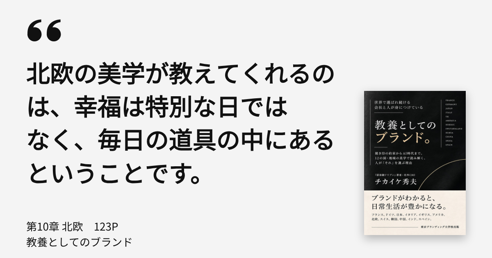

教養としてのブランド / 第10章 北欧『幸福と民主的デザインの美学』
北欧の美学が教えてくれるのは、幸福は特別な日ではなく、毎日の道具の中にあるということです。
『教養としてのブランド』第10章 北欧『幸福と民主的デザインの美学』（123ページ）本文より。著者：チカイケ秀夫

『教養としてのブランド』は、12の国・地域の美学から、人が「それ」を選ぶ理由を読み解くブランドの教養書です。全23章をnoteで期間限定・無料公開しています（マガジン）。
第10章 北欧『幸福と民主的デザインの美学』の5つの言葉
- 北欧の美学は、良いデザインをみんなのものにし、毎日の暮らしの中に幸福を見つけることである。（126P）
- 北欧の美学が教えてくれるのは、幸福は特別な日ではなく、毎日の道具の中にあるということです。（123P）
- 目指すのは、特別な日ではなく、ありふれた毎日が少し良くなること。（119P）
- LEGOが届けてきたのは、完成したおもちゃではなく、創造する楽しさです。（122P）
- 見せびらかすための物ではなく、暮らしの中で何度も手に取る物。（123P）